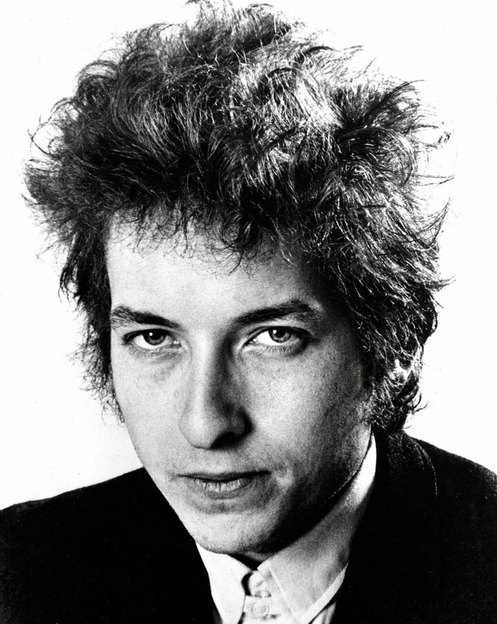

Positively 4th Street is Bob Dylan's bitter 1965 single, a pop hit that doubles as an open letter to former friends.
He recorded it on July 29, 1965, and Columbia released it on September 7.
It reached No. 7 on the Billboard Hot 100 and No. 8 in the UK.

Table of Contents
The Story Behind Positively 4th Street
Who Is the Song About?
Nobody has ever pinned down the target.
The usual reading is Greenwich Village folk-scene peers who resented his fame or his turn to electric rock.
Izzy Young of the Folklore Center said at least 500 people asked him whether it was about him.
He called the accusation unfair.
A Title Missing From the Lyrics
The words "4th Street" never appear in the song.
Dylan lived at 161 West 4th Street in New York from 1961 to 1964, and Gerde's Folk City, where he first played Blowin' in the Wind, began at 11 West 4th Street.
He had also lived on fraternity row near 4th Street Southeast in Minneapolis in 1959 and 1960.
Fans still argue over which street he meant.
Recording and Release
The Session
Dylan cut the track in New York City on July 29, 1965, during the Highway 61 Revisited sessions.
Bob Johnston produced it, having taken over from Tom Wilson, who produced Like a Rolling Stone in June.
It was the last song attempted that day, after "Tombstone Blues" and "It Takes a Lot to Laugh, It Takes a Train to Cry" were finished.
The studio log called it "Black Dally Rue."
- Bobby Gregg, drums
- Russ Savakus, bass
- Frank Owens, piano
- Al Kooper, organ
- Mike Bloomfield, guitar
A Single, Not an Album Track
Columbia issued the single on September 7, 1965, with "From a Buick 6" on the B-side.
The record runs 3:54 and sits in F-sharp major.
It landed between Highway 61 Revisited and Blonde on Blonde and never joined either album.
It later appeared on the US version of Bob Dylan's Greatest Hits.
The Wrong Take
Billboard reported on September 25, 1965, that about 17,000 early copies were mis-pressed.
An outtake of "Can You Please Crawl Out Your Window?" sat on the A-side where the hit belonged.
How Critics Heard It
Robert Christgau called the song "righteously nasty."
Andy Gill described it as "simply the second wind of a one-sided argument," a close sibling of "Like a Rolling Stone."
Cash Box reviewed it on September 18, 1965, as a "throbbingly bittersweet funky affair."
The lyrics are cold, yet the organ-driven backing sounds almost cheerful.
Paul Williams of Crawdaddy! heard an open letter delivered through Top 40 radio.
The 1965 music year guide shows what else was on the radio that fall.
| Measure | Detail | Result |
|---|---|---|
| Billboard Hot 100 | US peak | No. 7 |
| UK Singles Chart | UK peak | No. 8 |
| RPM (Canada) | Canadian peak | No. 1 |
| Rolling Stone | 500 Greatest Songs of All Time | No. 203 |
Legacy
Covers and Admirers
Johnny Rivers closed his 1968 album Realization with a cover.
Dylan wrote in Chronicles: Volume One that he preferred Rivers' version to his own.
The Byrds played it live in 1970, and Bryan Ferry, Simply Red and Lucinda Williams have all recorded it.
The Beatles rehearsed it during the Let It Be sessions but never finished a take.
A jukebox once owned by John Lennon held 40 of his favorite singles, and this was the only Dylan record on it.
Joni Mitchell has named the song as an early influence on her writing.
A Street in St. Paul
In July 2015, the St. Paul City Council unanimously co-renamed a stretch of East 4th Street behind CHS Field "Positively 4th Street."
Dylan's story runs on through the Folk Rock genre hub and our Bob Dylan biography.
FAQ
Who is Positively 4th Street about?
Bob Dylan has never confirmed a target.
Most listeners hear it as aimed at Greenwich Village folk-scene peers who resented his fame or his move to electric rock.
When was the song released?
Columbia released it as a US single on September 7, 1965.
Dylan had recorded it on July 29, 1965, with "From a Buick 6" on the B-side.
Did the single chart?
Yes, it reached No. 7 on the Billboard Hot 100 and No. 8 on the UK Singles Chart.
It also reached No. 1 in Canada on the RPM chart.
Is the song on an album?
Not on a 1960s studio album.
It sat between Highway 61 Revisited and Blonde on Blonde, and it later joined the US version of Bob Dylan's Greatest Hits.
Which 4th Street is the song named for?
Dylan never said, and the title is not in the lyrics.
Candidates are West 4th Street in Greenwich Village, where he lived in the early 1960s, and 4th Street in Minneapolis.
A snub from old friends turned into one of the sharpest hits of 1965.
Wikipedia's entry on the song covers its sessions and covers in more depth.
Press play above and hear why Positively 4th Street still stings.